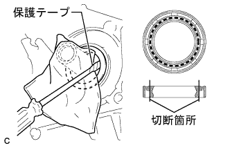

Timing Gear Case or Timing Chain Case Oil Seal (2AZ-FE) Removal |
| 1. Remove Front Tire RH |
| 2. Remove Radiator Upper Air Deflector |
Remove the 8 clips and the radiator upper air deflector.
| 3. Remove Engine Under Cover Rear RH |
Remove the 5 clips and remove the RH rear engine cover.
| 4. Remove Fan & Alternator V Belt |
 |
Using SST, slowly turn the V-belt tensioner clockwise.
Remove the V-belt from each pulley and slowly return the tensioner.
| 5. Remove Front Suspension Member Reinforcement RH |
 |
Remove the 4 bolts and remove the front suspension member reinforcement RH.
| 6. Remove Crankshaft Pulley |
 |
Using SST, hold the crankshaft pulley.
Loosen the crankshaft pulley bolt.
Screw the crankshaft pulley bolt into the crankshaft 2 - 3 pitches.
 |
Using SST, remove the crankshaft pulley.
| 7. Remove Timing Gear Case or Timing Chain Case Oil Seal |
 |
Using a utility knife, cut off the oil seal lip.
Using a screwdriver wrapped with protective tape, pry out the oil seal.